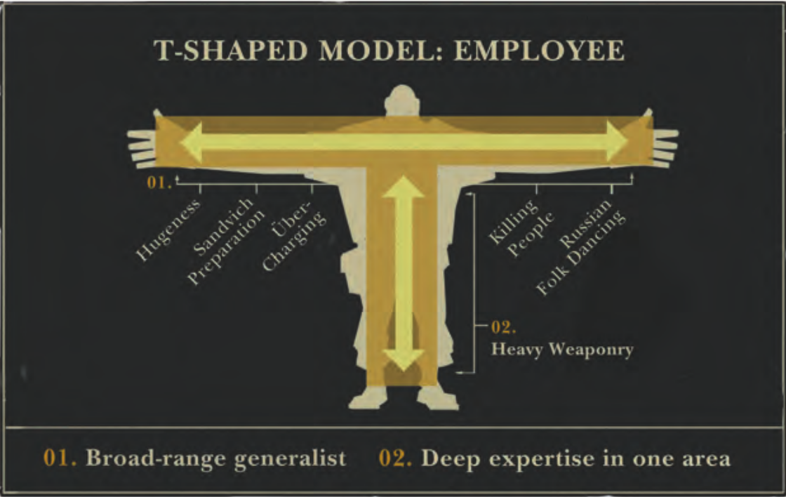

Advice From the Trenches
Chris Oakman
January 2014
Chris Oakman
January 2014
"Their [software developers] principal work is human communication to organize the user's expressions of needs into formal procedure."
Work somewhere where the quality of the software effects the bottom line.
"Working on the wrong thing for a month is equivalent to not showing up to work for a month at all."


Chris Oakman
chris@oakmac.com